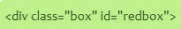
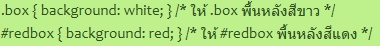

CSS SPECIFICITY คืออะไร?
CSS Specificity คือการเลือก CSS Selector ที่มีคะแนนสูงมาใช้กับ Element บนหน้าเว็ป
star_border
CSS ก็เหมือนภาษาอื่นๆอ่าน Code จากข้างบนลงมาข้างล่าง ถ้าเขียน CSS Selector ซ้ำกันอันข้างล่างจะได้นำไปใช้งานเพราะมันใหม่กว่าเเต่ CSS จะ Selector ที่ต่างกัน เเต่ละ Selector จะมีคะเเนนเเตกต่างกันถ้า คะเเนน ต่างกันลำดับการเขียน Code จะไม่มีผล
HTML:

CSS:

Back